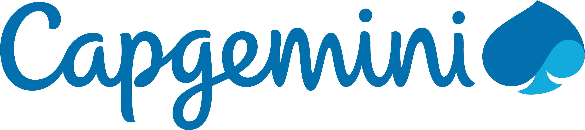

Experience
Data Scientist -

Oct 2021 – Sept 2024
- Served as Subject Matter Expert in MMM for CPG/FMCG, optimizing advertisement investments, resulting in a projected 5-10% increase in ROI and profitability.
- Enhanced Hierarchical Bayesian Model efficiency by reducing run time from 5 hours to 8 minutes using Jax arrays, boosting project capacity by 50%.
- Developed technical models using LGBM with 70% performance accuracy for zip-code-level insights, improving targeted marketing strategies
- Automated Exploratory Data Analysis (EDA), reducing analysis time by one-third and increasing productivity.
- Conducted copy testing to assess KPIs such as customer retention and ad relevance, identifying effective cross-feature combinations for predicting Volume per GRP.
- Built regression models and decision trees for KPI attribution, achieving an F1 score of 48% by integrating business insights and manual tree creation.
Software Engineer – 
Aug 2019 – Oct 2021
- Partnered with product managers, engineers, and data analysts to develop tailored solutions based on dynamic client requirements, ensuring alignment with business objectives and technical constraints.
- Optimized the PySpark-based ETL tool, resulting in improved data transformation efficiency and faster processing times, enabling quicker access to large-scale datasets and more efficient workflows.
- Successfully implemented SSO using Kerberos, streamlining the authentication process for multiple applications, reducing login complexity, and improving overall security across systems.
- Enhanced cross-functional collaboration by implementing technical solutions that improved both system performance and client satisfaction, driving the success of various data-driven projects.